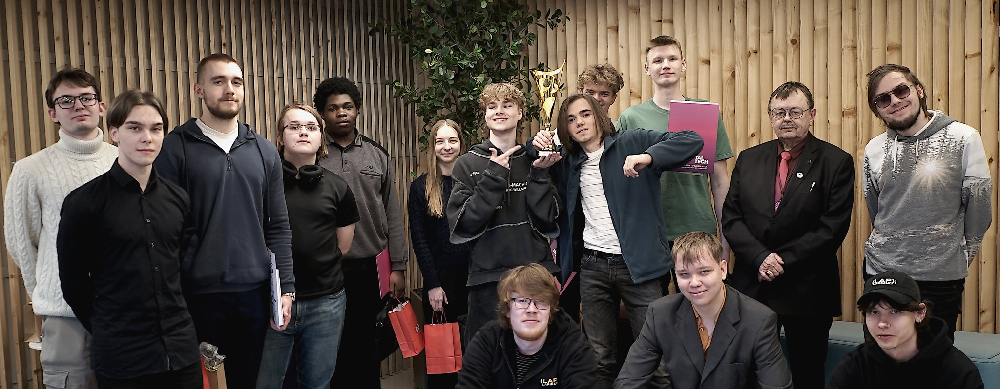

ASI KARIKAS 2025 KOKKUVÕTE
Tänavu, 15. märtsil 2025, korraldati Tallinna Tehnikaülikooli Mektory majas ASI Karikas programmeerimisvõistluse lõppvoor. Sel aastal katsusid jõudu Miina Härma Gümnaasiumi segatiim Tallinna Tehnikagümnaasiumiga ja Gustav Adolfi Gümnaasiumi võistkond. Finaalis osales ka etalontiim, mis koosnes Tehnikaülikooli küberturbe tehnoloogiate eriala esmakursuslastest, kellega said koolide võistkonnad mõõtu võtta.
Võistluse raames pidid osalejad looma keemia reaktsioonivõrrandite tasakaalustamiseks programmi. Pärast pingelist võitlust tuli võitjaks Gustav Adolfi Gümnaasiumi võistkond.
Täname omalt poolt ettevõtteid, kes toetasid selle aasta võistluse finaalis auhindade ja korraldusega - TTÜ Akadeemiline Ametiliit, Mektory, Baskin Robbins, Zone ja Cybernetica.
Fotograaf: Karina Reisel, https://flic.kr/s/aHBqjC5zQQ
FINAALIDES OSALENUD KOOLID
- Gustav Adolfi Gümnaasium
- Miina Härma Gümnaasium
- Nõo Reaalgümnaasium
- Rocca al Mare Kool
- Tallinna Nõmme Gümnaasium
- Tallinna Reaalkool
- Tallinna Tehnikagümnaasium
- Tallinna Ühisgümnaasium
- Tartu Tamme Gümnaasium
- Tartu Jaan Poska Gümnaasium